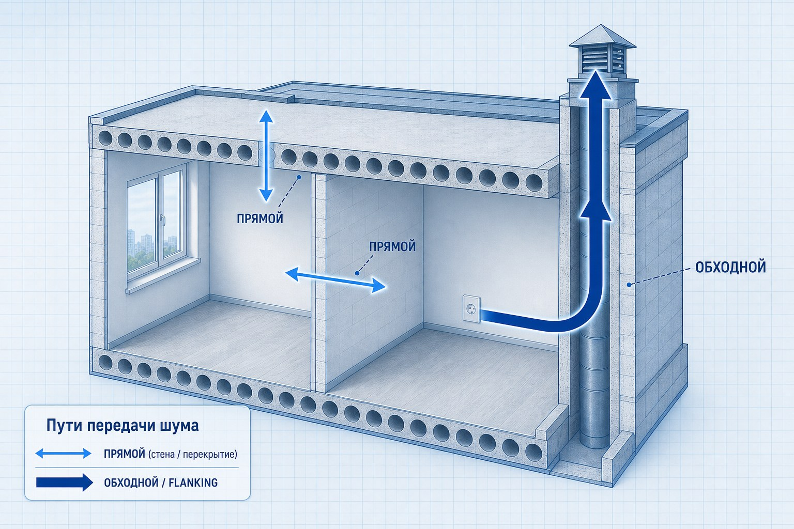

Защита от шума
Определяем источник, путь передачи и достаточный набор мер для снижения влияния шума.
- соседи
- улица
- инженерные системы
- смежные помещения
- оборудование
ЦИА / ПОМЕЩЕНИЯ
ЦИА разбирает, как звук и вибрация ведут себя в конкретном помещении: находит источники и пути передачи, проектирует решение под задачу объекта и проверяет результат замерами.
Короткий опрос по задаче и объекту — чтобы предложить стартовый формат работы.
Как мы работаем
Квартиры · дома · студии · офисы · HoReCa · спецпроекты · промышленные объекты
30 лет инженерной практики О ЦИА
01 / ЗАДАЧИ
Определяем источник, путь передачи и достаточный набор мер для снижения влияния шума.
Работаем с гулкостью, отражениями, разборчивостью речи, музыкальным и речевым комфортом.
Исследуем оборудование, инженерные системы, технические зоны и подбираем меры снижения воздействия.
02 / КТО МЫ
Центр инновационной акустики работает с жилыми, коммерческими, специальными и техническими объектами. Смотрим, как звук ведёт себя в конкретном помещении, и проектируем решение под его назначение — жить, работать, записывать, смотреть, вести переговоры или эксплуатировать оборудование.
В основе работы — 30 лет инженерной практики StP СТАНДАРТПЛАСТ в исследовании шума, вибраций, материалов и реальных конструкций.
Дать проверяемый инженерный результат: что происходит в помещении, что менять и по каким критериям это оценивать.

03 / ПРОБЛЕМА
Шум, который кажется идущим «с потолка» или «из стены», часто передаётся другим путём — через конструкции, примыкания или инженерию. Решение без обследования удорожает смету и редко даёт нужный эффект.
Поэтому ЦИА начинает не с выбора материала, а с анализа задачи и объекта.

04 / ПОМЕЩЕНИЕ КАК СИСТЕМА
Разбираем объект по зонам: стена, перекрытие, примыкания, инженерия — любое звено может оказаться слабым или дать обходной путь.
Оцениваем состав и толщину стены, её связь со смежными конструкциями, розетки, проходки и примыкания. Фактический результат может определяться самым слабым участком.
ЦИА исследует источник, прямые и обходные пути, конструкции, инженерные связи и точку восприятия. Только после этого определяется достаточное решение.
05 / ОБЪЕКТЫ
Тип помещения важен, но программу работ определяет задача: защита от шума, качество звучания внутри или работа с источником шума и вибрации.
Листайте →
1 / 6


Акустика под планировку и сценарии дома: спальни, детские, кабинет, кинозал, технические помещения и межэтажные связи.
Подробнее
Помещения, где важны точность звучания, внутренняя акустика, защита от внешнего шума и контроль вибраций.
Подробнее
Приватность речи, разборчивость голоса, видеосвязь, open space, шум инженерных систем и комфорт рабочих зон.
Подробнее
Атмосфера, музыка, гулкость зала, приватность зон, шум кухни, вентиляция и влияние на соседние помещения.
Подробнее
Исследование шума и вибрации оборудования, инженерных систем, рабочих зон и смежных помещений.
Подробнее06 / УСЛУГИ
Формат зависит от задачи, стадии объекта и требуемой точности: от дистанционной оценки до проектирования и контрольных измерений.
Листайте →
1 / 5

Разбор задачи по планам, фото, видео и описанию проблемы. Подходит как первый шаг или как законченная услуга, если исходных данных достаточно для инженерного вывода.

Провести замеры на объекте и получить инженерные рекомендации по источникам, путям передачи и следующим шагам.
Что входит
Что не входит

Построить проект с подбором конкретных акустических решений под задачу помещения.
Типовой проект для квартир и офисов: что строить, сколько материалов и какой прогноз — с проверкой после монтажа. Сложные сценарии и промышленность — в услугах 04–05.
Что входит
По согласованию

Проектирование акустики под сценарий пространства: студия, кинотеатр, переговорная, кабинет, зал, дом, HoReCa или медиа-пространство.
Проект под задачу пространства: студия, кинотеатр, дом, HoReCa — с согласованием дизайна и подтверждением замером. Простая звукоизоляция квартиры без сценария — формат 03.
Что входит
По согласованию

Исследование и проектирование решений для технических, инженерных и производственных акустических задач.
Работаем у источника — бойлерная, станок, генератор — а не только в помещении, где шум слышен. Бытовые задачи без промышленного источника — формат 03.
Что входит
Сравнение услуг
| Критерий | |||||
|---|---|---|---|---|---|
| Дистанционно / с выездом | дистанционно | с выездом | с выездом | с выездом | с выездом |
| Есть замеры | нет | да | да | да | да |
| Есть рекомендации | да | да | да | да | да |
| Есть проект | нет | нет | да | да | да |
| Есть спецификация | нет | нет | да | да | да |
| Есть контроль результата | нет | нет | да | да | да |
Услуга 01 может быть самостоятельным форматом — без выезда на объект.
07 / ПОДБОР ФОРМАТА
Несколько вопросов о задаче и объекте — чтобы сузить стартовый формат: дистанционная оценка, замер, проектирование, спецпроект или промышленная акустика.
Вопрос 1 из 7
Симптом
08 / ПОДХОД
01
Работаем с исходными данными, измерениями и назначением помещения.
02
Подбираем решение по требуемой функции и достаточности, а не по числу слоёв «на всякий случай».
03
В проектных форматах фиксируем условия результата и проверяем его измерениями.
09 / ПРОЦЕСС

Понимаем объект, сценарий использования, проблему и ограничения.
Анализируем планы, фото, конструкции, оборудование и стадию работ.
Формат зависит от задачи: дистанционно, с выездом или в составе проекта.
Подбираем решения, узлы, материалы и требования к реализации.
В проектных форматах проводим контрольные измерения по согласованной программе.
10 / РЕЗУЛЬТАТ

План, фото, описание задачи и стадия объекта.
Источники шума, слабые зоны и приоритеты обработки.
Решения, узлы, спецификация и критерии проверки — в зависимости от формата.
11 / КЕЙСЫ
Квартира · Москва
Задача: понять путь ударного шума и подготовить проект до ремонта.
Формат: замер и обследование → инженерное проектирование.
Результат: карта путей передачи, проектные решения и критерии проверки после монтажа.
Офис · регион
Задача: речь слышна в соседних кабинетах, мешает видеосвязь.
Формат: дистанционная оценка → спецпроект под сценарий переговорной.
Результат: решения по конструкциям и внутренней акустике с согласованием отделки.
МАТЕРИАЛЫ
Отдельные страницы с развёрнутым описанием форматов работы, типов объектов, географии и полезными статьями.